文档 2.0 · 交易库视觉方案
交易库视觉设计方案 V2.0
本方案说明交易库 V2.0 如何组织实盘交易与模拟盘练习，以及用户如何查看统计、进入详情、回放并返回来源页面。文档身份为 TRADING-LIBRARY-V20，版本为 2.0；正文覆盖页面结构、操作规则和未来产品验收要求，供设计与开发共同使用。
逻辑权威是《交易库设计规范》；本页补充交易库自身的页面、视觉和业务规则。历史 E 图只承担几何、密度和颜色参考。
| 用途 | 权威来源 |
|---|---|
| 逻辑权威 | 《交易库设计规范》 |
| 首页日期入口、交易库进入与返回 | V2.5 入口状态约定；当前旅程见第六章 |
| 交易库 E 布局、条件、练习、统计与分镜 | 本 V2.0 正文 · E 原型 |
| 全站共享结构和控件基础 | V2.5 公共视觉与控件规范；本版尺寸见第二章 |
| 独立身份 | TRADING-LIBRARY-V20 / version 2.0 |
一、目标与取舍
交易库帮助用户查找和核对交易、理解交易结果，并进入实盘回合复盘或模拟盘配对回放。为实现这一目标，设计分为以下三个方面。
查找和核对交易。 用户从首页日期入口或普通交易库入口进入后，能够看到已经生效的来源条件，并在实盘成交和模拟盘练习中定位需要核对的对象。
理解交易结果。 用户能够分别阅读实盘与模拟盘的列表和统计，按各自的日期口径理解结果，并区分实盘已平仓回合、未平仓成交、模拟盘完整练习、内部配对和缺失数据。
完成对象复盘。 用户能够从实盘标的进入回合集和回合复盘，也能够从模拟盘练习进入练习详情、内部配对和配对回放；完成后逐层返回并恢复来源位置和状态。
设计取舍
实盘和模拟盘复用列表、统计与详情的呈现方式，但分别保存条件和导航状态；实盘从列表直接进入标的回合集，模拟盘从列表直接进入练习详情，再选择内部配对进入配对回放，保持进入、复盘、返回的短路径。这样可以复用稳定的页面结构，同时保留两种模式各自的业务口径和恢复状态。
范围与边界
V2.0 覆盖交易库的实盘列表、标的回合集、实盘回合复盘、模拟盘练习列表、练习详情、内部配对、配对回放和统计进入与返回，以及加载、空态、错误和缺失输入状态。公共视觉规范由现有全站规范维护；首页入口布局不在本章展开，既有详情/回放容器不新增双栏，模拟账户不拼接连续权益曲线，相关边界在第二、三、八、十章说明。
“模拟练习”是一次导入文件的完整样本；一个文件中的成交、内部配对和残余持仓不增加练习数。“实盘回合”是一次人的主动平仓动作；一次动作匹配多笔开仓仍是一回合。练习样本、实盘回合、内部配对和实际成交行是四个不同单位，未平仓数量是持仓状态指标，不能替代其中任何一个统计单位。
当前 fixture 的六个模拟练习使用独立的练习日期和导入字段。A 残余数量为 70，结束估值未知；B–F 的净额为 -104、354、-78、98、118 CNY。顶层统计因此为 6 个练习、5 个可计算、1 个未知、累计 388 CNY、胜率 3/5 = 60%。A 若明确结束价 140，才按 1900 + 2800 − 23 = 4677 计算；默认样例不自动采用这一假设。
二、布局与视觉规范
交易库的页面结构服务于条件确认、结果阅读、对象进入和返回恢复。布局沿用 V2.5 的公共表面、颜色、字体、间距、焦点和状态规则，具体区块职责如下。
| 区块 | 职责 |
|---|---|
| 顶栏 | 64px；仅显示“交易库”标题，不显示来源、返回首页、重复面包屑或视角 label。 |
| 全局侧栏 | 72px 固定导航，保留 首页 / 交易库 / 分析 / 数据 / 策略 和当前位置；普通交易库入口不显示历史待复盘徽章。 |
| 二级栏 | 58px；实盘/模拟盘模式与列表/统计相邻；不额外显示视角 label。 |
| 条件工具区 | 编辑日期、市场、账户和局部搜索；独立显示已生效条件摘要。 |
| 列表或统计主体 | 实盘列表按成交阅读、实盘统计按已闭合回合阅读；模拟盘列表和统计按完整练习阅读，内部配对只在详情层解释；不把两种日期口径合并。 |
| 详情、回合集与复盘 | 实盘沿用标的回合集和回合复盘容器；模拟盘沿用练习详情和配对回放容器，逐层携带对象身份和必要的开仓上下文。 |
| 分页与状态反馈 | 在加载、空态、失败和重试时保持结果区尺寸与位置。 |
控件与文字采用以下对齐规则。按钮、分段标签、日期快捷项和应用动作在命中盒内水平、垂直居中；输入文字、名称、说明和错误文案左对齐；金额表头和金额数据右对齐。
| 部位 | 尺寸与规则 |
|---|---|
| 内容区 | 左缘96px、右边距24px；比较视口为1440×1000和1280×800，字号与控件不随长页缩小。交易库画布按实际内容自然增长：普通列表/复盘保留至少1000px（窄版至少800px），统计与下钻由指标行、趋势、分布和明细的自然底边决定，异常提示继续向下扩展。首页直接使用V2.5完整1440×2346宿主。超出比较视口的内容纵向滚动，不是裁切。 |
| 字号 | 页面标题24/32、模块标题18/24、正文和控件14/20、说明12/16、指标28/34。 |
| 交易库搜索 | 宽220px。 |
| 刷新动作 | 36×36px命中盒；与搜索的间隔为28px。 |
| 筛选浮层 | 宽320px，字段高36px。 |
| 图标与动作 | 公共图标视觉尺寸16px；搜索与筛选图标18px；外层图标和动作按钮保持36px命中盒。 |
| 日期和年份图标 | 日期筛选使用日历图标，年份选择使用下拉箭头，静态日期不添加图标。 |
| 表格 | 沿用公共列定义；金额列共用右边界，名称和说明左对齐，表头与结果区不重叠。 |
| 模拟工作区 | 背景 #111E2C；卡片 #162332；边框 #40566D；顶部 2px 强调线 #607C96。按钮保持蓝色。 |
| 状态颜色 | 盈利 #53D7A0；亏损 #FF8592；其他信息使用中性色。 |
布局采用已批准的 E：64px 顶栏只保留“交易库”，58px 二级栏把实盘/模拟盘模式与列表/统计相邻放置。界面不显示来源、返回首页、重复面包屑或视角 label；返回首页的路径由全局侧栏恢复来源上下文。
E 定型参考
以下四张 1440px 截图是 E 原型的冻结参考，覆盖实盘/模拟盘与列表/统计四个主状态。其余业务状态继续由生成分镜承载；截图用于视觉比对，不把固定样例数据转化为产品规则。
截图状态对照 · 文档演示
按步骤读懂状态变化
截图状态对照 · 文档演示；按钮仅切换截图，不操作产品


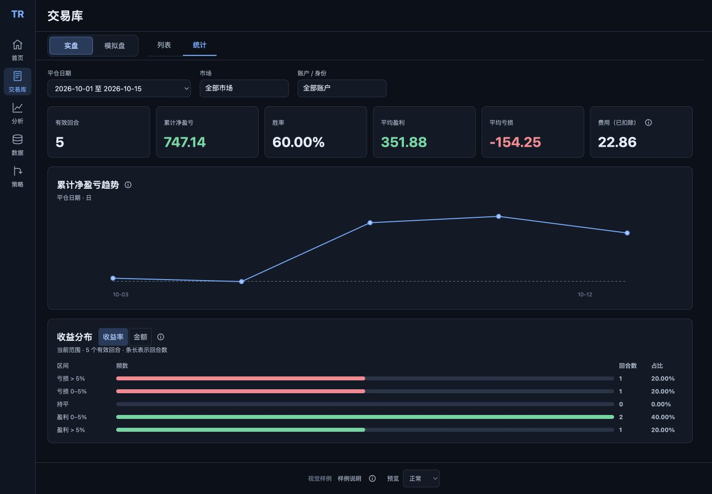


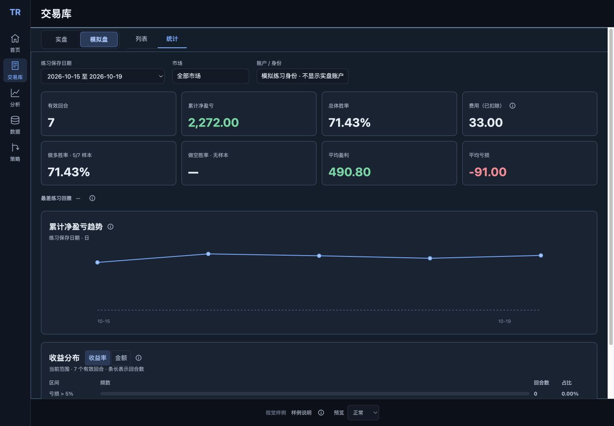
第 1 / 4 帧
原型底部的“视觉样例”工具只用于预览 normal/loading/empty 样例，不属于产品布局或正式业务控件。
说明通过全站统一的信息 i 入口提供：hover 或 focus 打开说明，按 Esc 或点击外部关闭；入口命中区 36px，信息图标视觉尺寸 16px，说明浮层宽 280px，并在视口边缘自动调整位置，避免越界。费用、胜率分母、残余估值和回放切点的详细口径都从该入口进入，不能只用一两句缩写文案替代。说明入口不把长文案常驻在指标卡中。
数字显示遵循公共格式：价格保留两位小数；金额绝对值达到1万显示“万”、达到1亿显示“亿”，均保留两位小数，不增加“万亿”。详情、提示、悬停或聚焦、复制和导出都能查到完整值，缩写不改变原始数据。窄栏的占比另行按第五章换行。
三、范围、日期与搜索
进入与默认
首页入口默认进入“实盘”。来源日期、市场、账户、标的和返回上下文随入口传入，条件到达后立即生效，用户不需要再次点击应用。未传入的条件保持交易库自身范围。交易库内修改条件不回写首页，返回首页时恢复原期间、滚动位置和触发焦点。
入口、刷新和直达都按 URL 重建已生效范围；参数的完整约定见 V2.5 入口状态约定。首页只产生实盘模式，交易库内部待复盘由用户显式筛选。
切换模式与保存
交易库分为互斥的“实盘 / 模拟盘”模式。两个模式分别记忆日期、市场、账户条件、搜索、排序、页码、滚动位置和焦点；列表和统计共享当前模式的日期、市场与账户条件。切换模式不得覆盖另一模式已保存的账户选择，也不得把实盘账户作为模拟盘练习身份。一个模拟账户可包含多次练习，账户下拉筛选所属练习，不改变练习计数或内部配对；具体来源/跨账户边界仍待确认。这里仅约定条件的保存与恢复，不新增账户控件布局。
日期规则
| 日期方式 | 规则 |
|---|---|
| 单日 | 按该日筛选，包含起止日。 |
| 区间 | 按实际起止日期筛选，包含起止日。 |
| 全部 | 不限定日期范围。 |
| 本周 | 上海时区自然周，从周一开始，截至今天，包含起止日。 |
| 本月 | 上海时区自然月，从每月1日开始，截至今天，包含起止日。 |
| 本年 | 上海时区自然年，从1月1日开始，截至今天，包含起止日。 |
提交后实际起止日期必须可见。日期范围缺失或不合法时显示可修正提示，不静默换成另一个范围。
练习日期、历史成交日期和导入时间是三种不同日期。当前确认的练习日期代表这次练习实际发生的日期：导入时优先从包含明确日期的文件名识别；文件名缺失、无效或有歧义时，必须在导入完成前要求用户补填或确认。详情允许更正，但不能保存空值或无效值，并记录日期来源是文件名识别、人工补填还是人工更正。重导不能覆盖已经人工确认的日期，不因更正日期新增练习；历史成交日期与导入时间继续分别追溯。标题、日期筛选、排序和模拟统计均使用当前确认的练习日期，实盘列表按成交日期归属，实盘统计按回合平仓日期归属；正式列表不显示未知练习日期。
搜索与刷新
交易库内搜索是局部表内筛选，只过滤交易库表，不打开全局全屏搜索遮罩。来源范围、日期、市场和账户的条件摘要与搜索并列；摘要只作只读说明，与按钮分开显示。清空、无匹配和失败都保留工具区尺寸与位置；刷新保留当前有效条件。搜索无匹配与没有交易是两种不同空态，缺失数据不能以零代替。
截图状态对照 · 文档演示
按步骤读懂状态变化
截图状态对照 · 文档演示；按钮仅切换截图，不操作产品

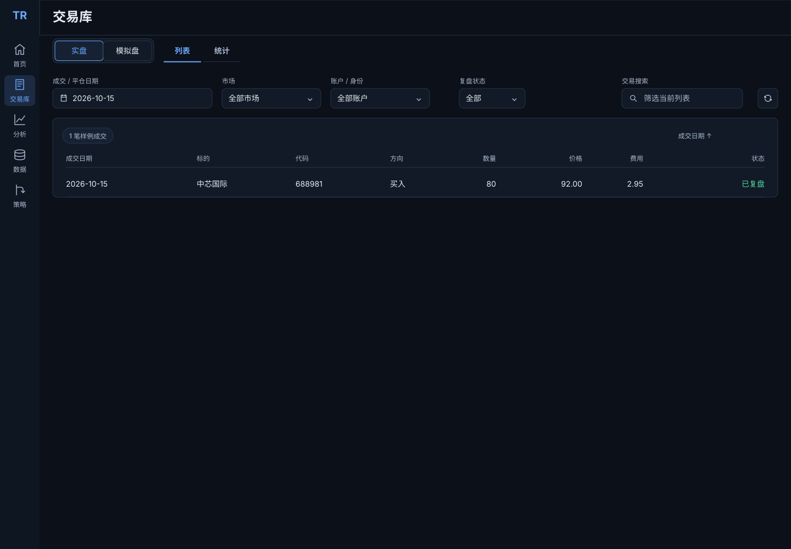

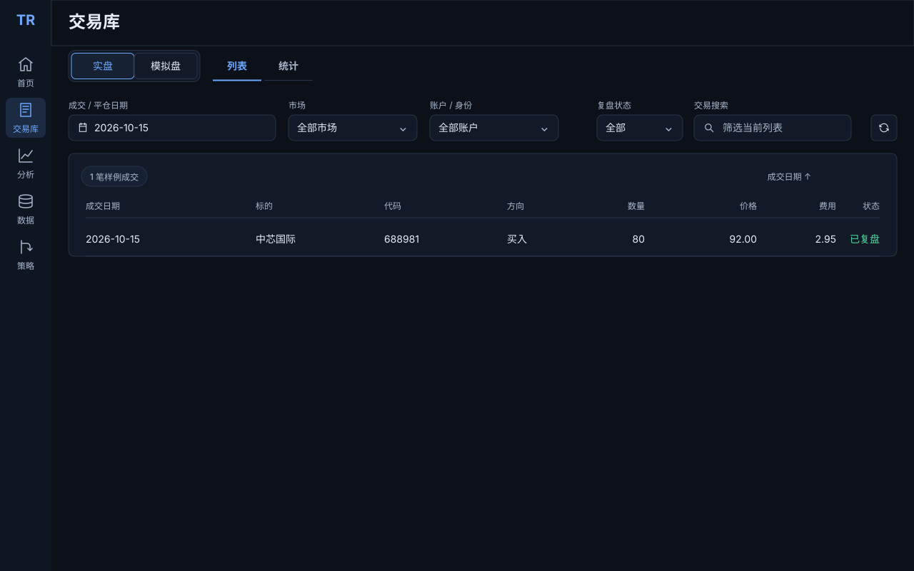

第 1 / 3 帧
普通日期入口和普通月份范围分别表达单日条件与区间条件；图内只显示已应用的来源、范围和数据，入口不默认带待复盘口径。图外 caption 负责说明触发动作、状态变化、保留项和返回位置。仅模拟盘的月份、年份和空样本生成分支沿用当前确认的练习日期；实盘列表继续使用成交日期，实盘统计继续使用回合平仓日期，不回退或套用模拟口径。
交易库内部搜索沿用 V2.5 公共规范的表内筛选规则；本交易库分镜不重复摆放首页搜索图稿。
正式业务规则包括日期、搜索、刷新、返回上下文与范围重建。E 原型中的固定数据、固定 loading/empty 样例、底部“视觉样例”预览工具，以及刷新时重置为样例状态的行为，只服务于原型预览，不属于产品规则。
四、列表、练习与回合
成交是交易库中可按条件核对的买卖记录；一次练习是一个完整导入文件，可以包含多个标的、成交、内部配对和残余持仓，最终多标的展示名仍待业务确认。实盘回合由一次人的主动平仓动作定义；详情可携带范围外必要的开仓上下文，但不改变列表和统计归属。同一标的同一天的多次练习保持独立身份。
实盘列表
实盘列表按每笔成交日期筛选，并保留未平仓成交。打开某个标的的交易后，进入既有详情容器查看该标的的回合集，不增加中间页面。关闭或返回时恢复来源列表的标的、筛选、排序、页码、滚动位置和触发焦点。
模拟盘练习列表
模拟盘以一次练习为列表入口。列表分别显示练习身份、实际成交条数、内部配对数和未平仓状态；这些数字不能互相替代。点击练习直接进入该练习详情，再选择内部配对进入配对回放，不增加中间页面。进入回放后返回，恢复原练习、筛选、排序、页码、滚动位置和焦点；同一标的的其他练习不混入当前详情。
同一账户、标的、练习日期和全部交易内容均相同，才是等价重复。格式、列顺序或行顺序改变仍然是重复；未配对记录和实际记录条数也必须参与比较。练习名称按“标的名 · 练习日期 · 稳定序号”生成，同标的同日练习使用 #01、#02 等本地序号，序号不随排序改变，也不表示回合数。重复导入复用原练习身份，不新增练习编号、交易样本或历史样本，并保留已有复核、完成状态、笔记、截图和标注。内容变化时先展示差异，让用户选择更新现有练习或建立新练习；选择前不修改原练习。更新保留历史与人工成果，仅受影响内容待核对，未受影响状态不重置，历史版本不重复计数；无法匹配的既有人工成果、冲突记录或被移除的交易不得静默删除，也不得强制转移到其他对象；新建则保留原练习不变。
中途加减仓按最近开仓优先配对。例子按以下步骤计算：
| 步骤 | 成交 | 配对结果 |
|---|---|---|
| 1 | 先买100 | 形成较早的开仓量100。 |
| 2 | 再买50 | 形成较晚的开仓量50。 |
| 3 | 卖80 | 先配对较晚的50，再从较早的100中配对30。 |
| 4 | 完成配对 | 形成两条内部配对，但这一次主动卖出仍只形成一条实盘回合；剩余70仍未平仓。 |
模拟详情可以展示内部配对数量和来源，但内部配对数不等于模拟练习数。A 的已实现毛额为 1900、费用为 23、残余为 70；没有结束估值时整体练习净额未知。若业务明确结束价 140，才按 1900 + 70 × (140 − 100) − 23 = 4677 计算；这是明确假设的示例，不是全局报价自动套用。
配对不跨练习；一个卖出动作匹配多笔开仓仍是一条实盘回合。100+50 买入后卖出 80 的样例可以显示 50+30 的内部来源和余 70 的持仓状态，但不能把两条来源记录写成两次人的平仓。输入样例若给两条技术成交同一 humanactionid，只表达同一人工动作的设计边界；生产环境的动作识别仍未决，不使用时间或价格相近来推断。
截图状态对照 · 文档演示
按步骤读懂状态变化
截图状态对照 · 文档演示；按钮仅切换截图，不操作产品

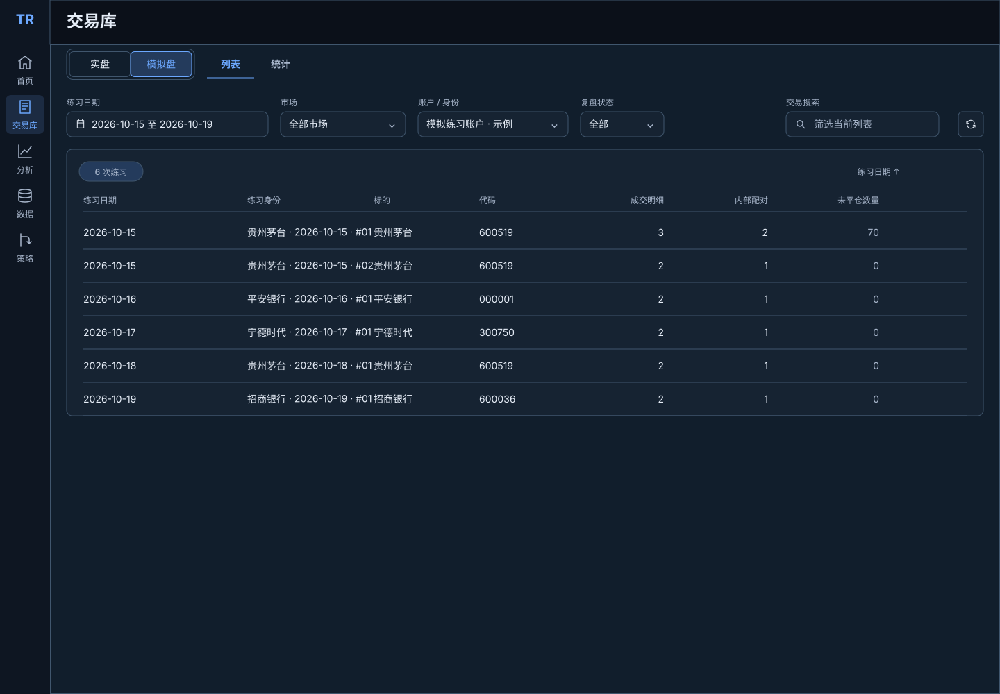

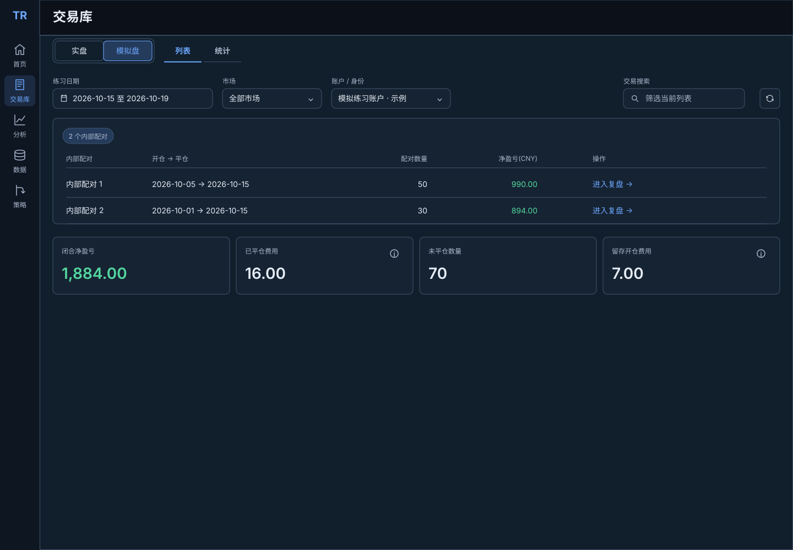

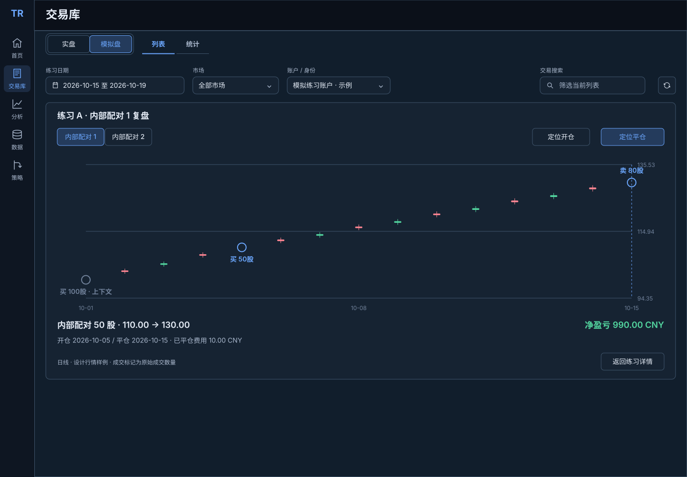

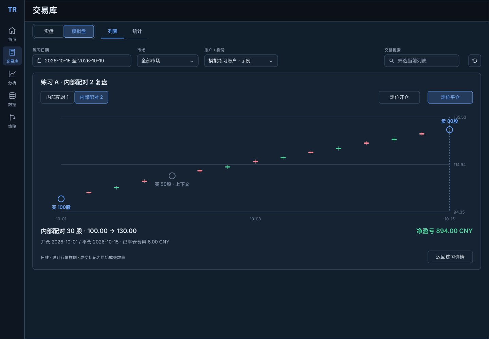

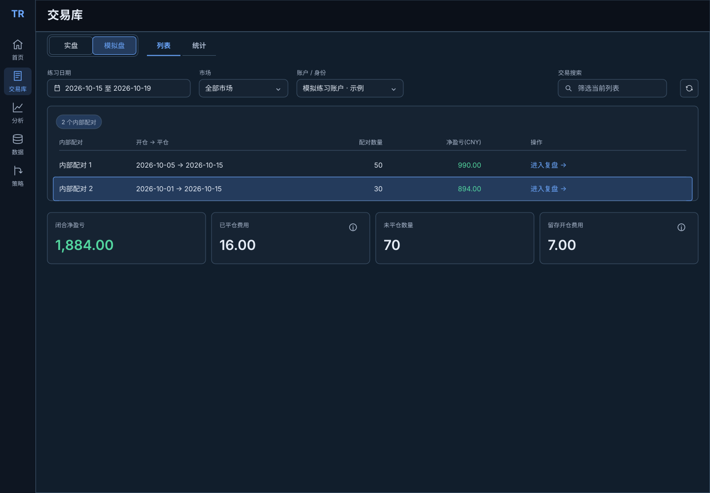

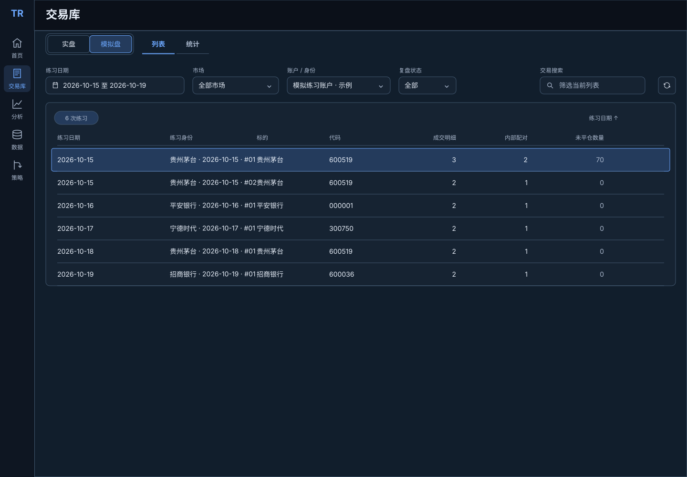

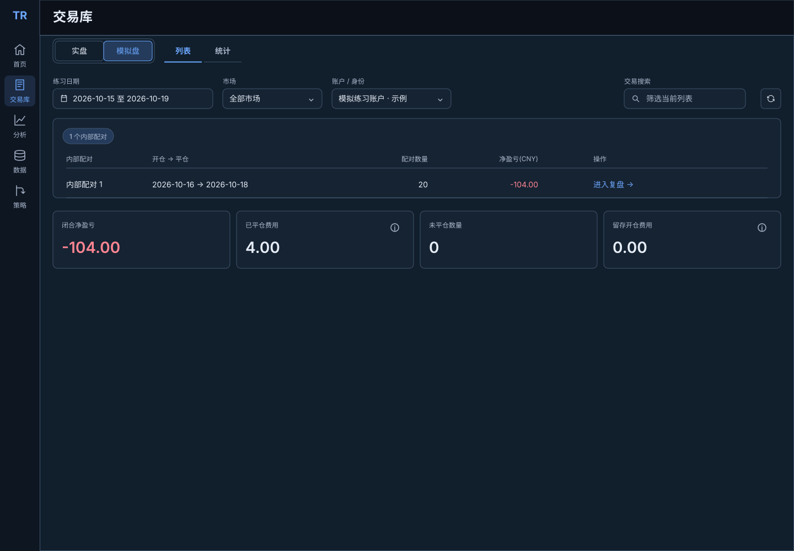

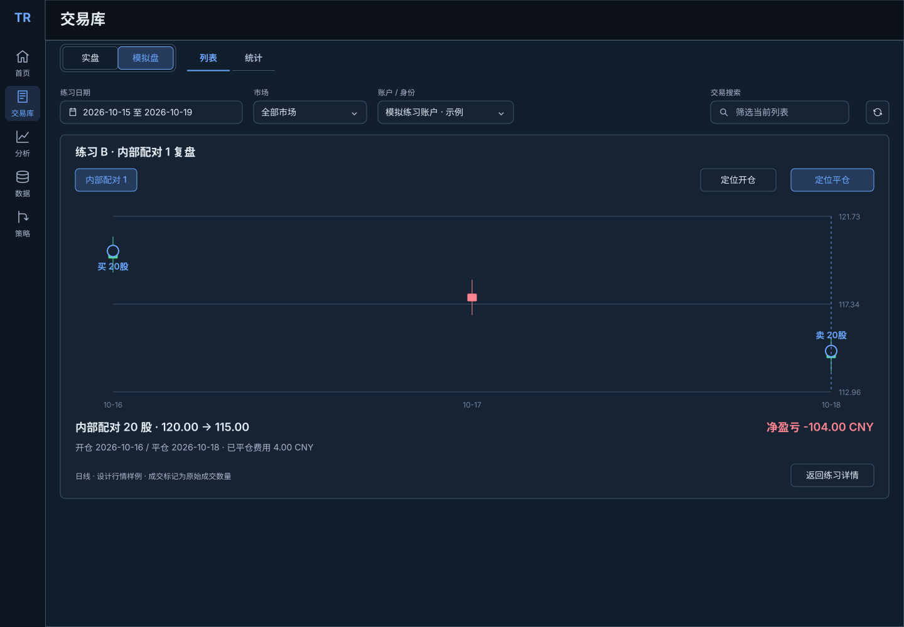
第 1 / 8 帧
五、统计与分布
本章说明统计样本的日期归属、结果指标、趋势粒度和分布下钻，实盘与模拟盘使用各自的数据口径。统计页复用趋势与盈亏分布组件。
样本与日期
| 范围 | 列表日期 | 统计日期 |
|---|---|---|
| 实盘 | 成交日 | 回合平仓日 |
| 模拟盘 | 当前确认的练习日期 | 当前确认的练习日期 |
实盘统计按已闭合回合计数，未平仓成交仍保留在实盘列表；模拟盘统计按完整练习计数，内部配对仅在练习详情和配对回放中解释。当前确认的练习日期是这次练习实际发生的日期，导入时优先从文件名的明确日期识别；缺失、无效或有歧义时在导入完成前要求补填或确认。详情可更正但不能保存空值或无效值，并记录日期来源；重导不能覆盖人工确认日期，不因更正日期新增练习。历史成交日期与导入时间分别保留，标题、筛选、排序和模拟统计使用当前确认日期；同一标的同日练习保持独立身份。
指标与结果口径
V2.0 fixture 的模拟统计基线如下，所有顶层数字按练习而不是内部配对计算：
| 指标 | 样例值 | 口径 |
|---|---|---|
| 练习总数 | 6 | 账户中选中的完整导入样本 |
| 可计算样本 | 5 | 没有残余，或残余有明确结束估值 |
| 未知样本 | 1 | A 的残余结束估值缺失 |
| 可计算累计净盈亏 | 388.00 CNY | B–F 净额求和 |
| 胜率 | 60.00% | 3 个正净额 / 5 个可计算练习 |
| 费用 | 各练习原始成交费用只计一次 | 不把配对行重复收费 |
扣费后练习净额大于 0 为盈利、小于 0 为亏损、等于 0 为持平。胜率分母是可计算练习数，持平也进入分母；没有可计算样本时胜率显示“—”；未知练习不进入累计金额、胜负数量或分布。混合方向练习的练习级分类仍待业务确认，不从内部多空记录推断方向统计。模拟盘第一层展示练习总数、可计算样本、累计净盈亏和胜率；费用说明通过指标旁的全站信息 i 入口按第二章规则展开。
模拟净额 = 未扣费的已实现毛盈亏 + 未扣费的残余持仓浮动毛盈亏 − 练习费用一次。若来源金额已经是含费净额，则视为已扣费等价值，不再二次扣费。残余存在而结束估值缺失时净额未知，不能使用零、当前报价或全局 valuation 报价自动替代；没有残余时不需要结束估值。初始资本缺失或非正数时，金额、胜负和练习计数仍可显示，收益率显示未知并从收益率样本数排除；收益率使用该次练习的正初始资本，不套用账户级本金。
风险指标显示“最差练习回撤”。
- 含义与选取范围：每次练习使用当前模拟盘筛选与练习日期独立选取，沿自身完整权益轨迹计算；轨迹含初始资金、开仓后按标记价格计价的浮动盈亏和费用。汇总取所有有效练习的单练习最大回撤中的最大值。短说明为“所选练习中，单次练习权益最大回撤的最大值。”
- 计算方式：初始权益必须为正，权益样本必须完整有序且估值/费用范围一致。
peak_t=max(E_0…E_t)，DD_t=(peak_t−E_t)/peak_t，单练习 MDD 为max_t DD_t；分母是截至该时点的最高历史权益。 - 数据不足如何显示：缺少初始值、路径或估值、存在未调整外部现金流时，该练习不可用。全部有效才显示数值，部分有效显示“— · 可计算 N/M 练习”；空样本显示“— / 无练习”；完整有效且为零显示“0.00%”。当前样例缺少逐时权益，显示“—”并说明“暂不可计算”。不把累计净盈亏曲线冒充权益回撤。
独立算例：权益 100 → 120 → 90 的单次练习回撤为 25%；另一练习 100 → 110 → 99 为 10%；汇总为 25%。若第二条练习缺少路径，则显示“— · 可计算 1/2 练习”。当前 fixture 没有逐时权益路径，因此样例只显示不可计算，不把累计净盈亏曲线冒作权益回撤。
趋势粒度
日期跨度不超过31天按日展示，超过31天且不超过两年按月展示，超过两年按年展示。模拟盘趋势以当前确认的练习日期聚合；实盘趋势按实盘统计的回合平仓日期聚合。粒度随当前统计范围确定。
分布与下钻
每个区间使用横向条形图表达频数：左侧为区间名称，中间为共享最大频数尺度的条形，右侧显示数量和占比，实盘轴标为“回合数”，模拟盘轴标为“练习数”。实盘下钻进入标的回合集和回合复盘，模拟盘下钻进入练习详情、内部配对和配对回放。零样本不绘制最小假条，亏损区间仍使用正向频数宽度。加载显示等待占位，空态没有条形并说明没有可计算样本；计算输入缺失时排除无效练习并明确当前分母。收益率/金额切换沿用既有区间边界，切换不改变条件。展开区间明细只展示该区间对象，不改变分母、顶部条件或原分布；点击对象进入对应模式的复盘路径，返回后恢复原区间与列表位置。
实盘普通统计
截图状态对照 · 文档演示
按步骤读懂状态变化
截图状态对照 · 文档演示；按钮仅切换截图，不操作产品

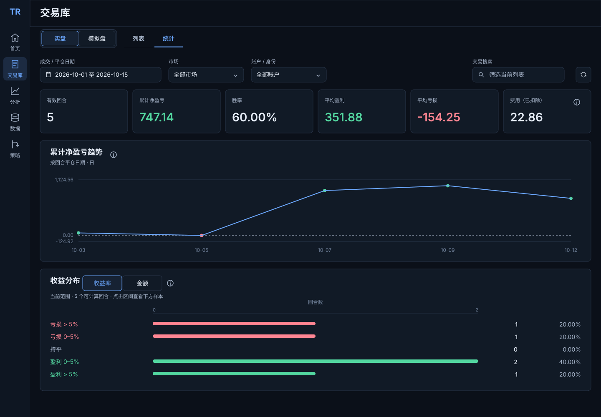
第 1 / 1 帧
模拟盘普通统计
截图状态对照 · 文档演示
按步骤读懂状态变化
截图状态对照 · 文档演示；按钮仅切换截图，不操作产品

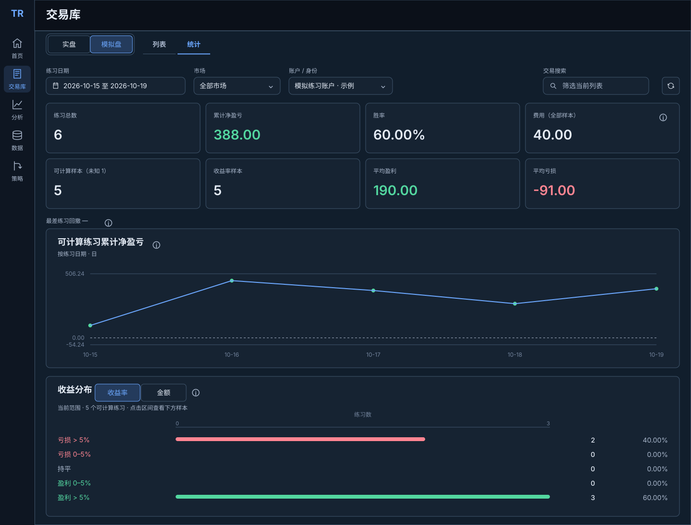
第 1 / 1 帧
金额切换、下钻与返回
截图状态对照 · 文档演示
按步骤读懂状态变化
截图状态对照 · 文档演示；按钮仅切换截图，不操作产品


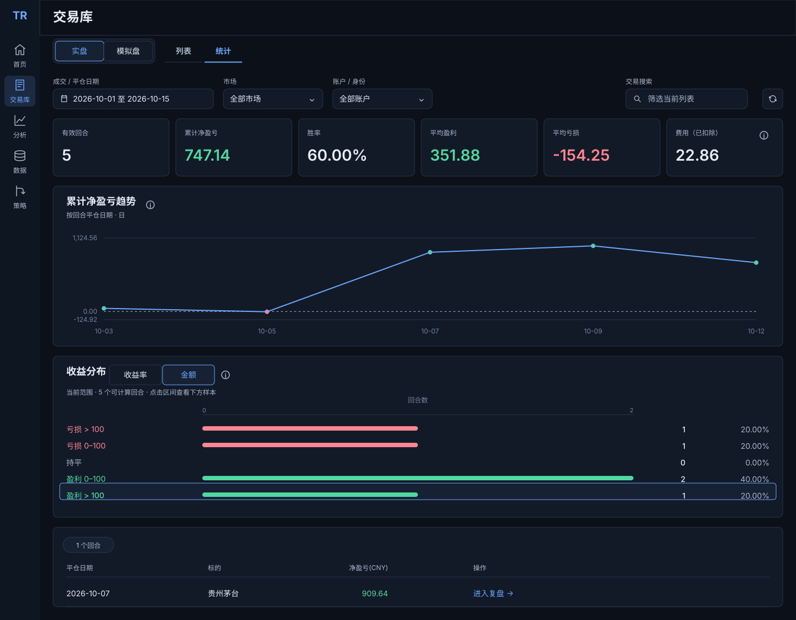

第 1 / 3 帧
趋势边界与粒度
截图状态对照 · 文档演示
按步骤读懂状态变化
截图状态对照 · 文档演示；按钮仅切换截图，不操作产品

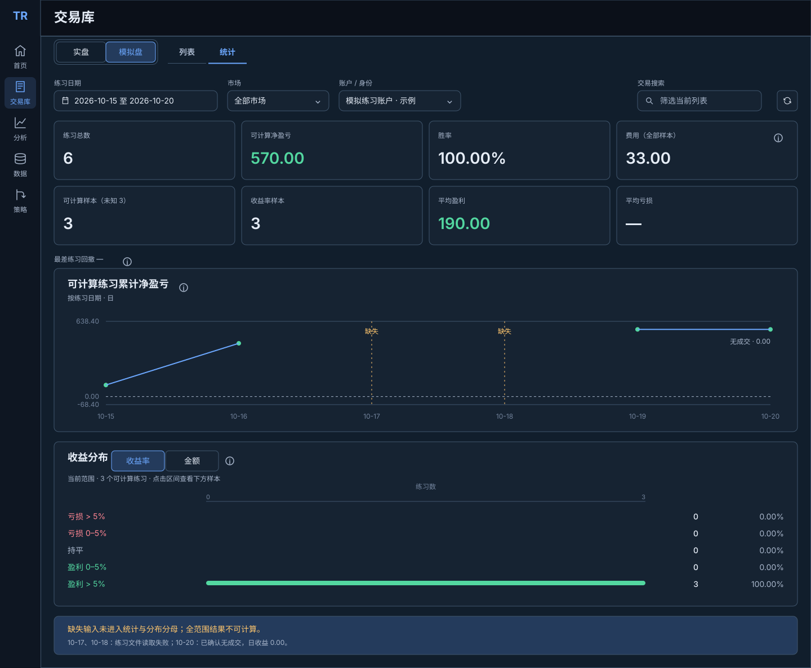

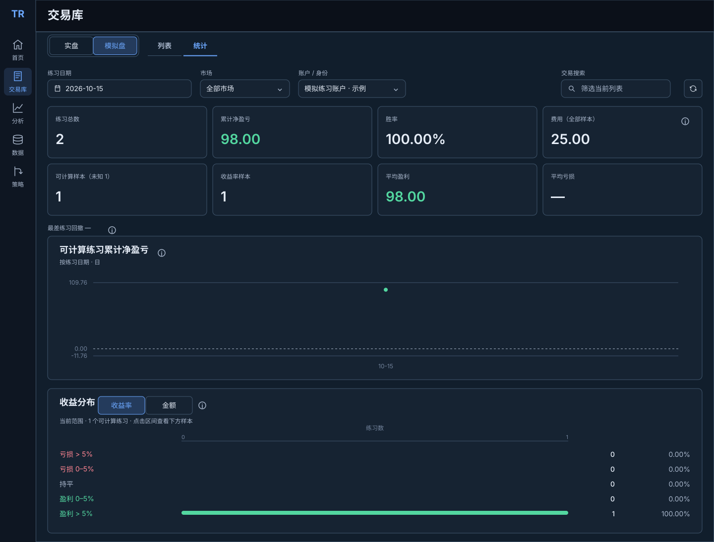


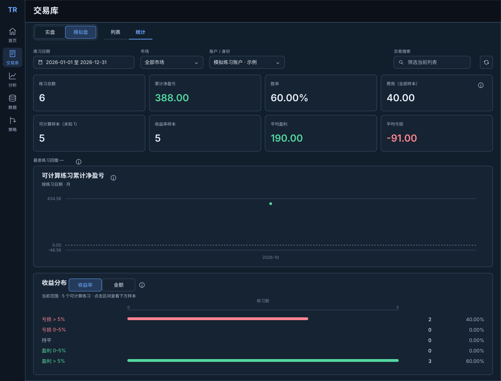

第 1 / 5 帧
六、查看详情、进入复盘与返回
这一章按用户从来源页面进入交易库、打开实盘或模拟盘对象、完成回合复盘或配对回放并逐层返回的旅程说明页面如何交接条件和恢复位置。
| 阶段 | 用户动作 | 界面与返回结果 |
|---|---|---|
| 首页日期点 | 打开日期详情后点击查看交易 | 进入实盘，应用首页传入的范围；来源日期、市场和账户立即生效，无需再次应用。 |
| 普通交易库入口 | 打开交易库入口 | 进入实盘，应用首页传入的范围；入口不携带待复盘口径。 |
| 库内待复盘筛选 | 在交易库内显式选择待复盘 | 保持来源条件；完成复盘后能在交易库内核对筛选结果变化。 |
| 实盘列表 | 打开某个标的的交易 | 在既有详情容器内查看该标的的回合集，不增加中间页面。 |
| 模拟盘列表 | 切换到模拟盘并打开一次练习 | 直接显示这次练习的练习详情，同标的的其他练习不混入。 |
| 实盘标的回合集 | 选择一个回合进入回合复盘 | 携带该回合及必要的开仓上下文；范围外上下文不改变统计归属。 |
| 模拟练习详情 | 选择一个内部配对进入配对回放 | 携带该练习及内部配对身份；范围外上下文不改变统计归属。 |
| 实盘回合复盘或模拟配对回放 | 关闭或返回 | 恢复原实盘回合集或模拟练习详情，以及筛选、排序、页码、滚动位置和触发焦点。 |
| 详情返回 | 返回来源列表 | 恢复原标的回合集或练习详情在来源列表的位置与状态，并保留筛选、排序、页码、滚动位置和触发焦点。 |
| 交易库返回首页 | 通过全局侧栏回到首页 | 恢复首页原期间、贡献模式、表格状态、滚动位置和触发焦点；顶部不提供独立“返回首页”动作。 |
返回字段按来源保存如下：
| 来源 | 恢复字段 |
|---|---|
| 交易库列表、实盘标的或模拟练习 | 模式、标的回合集或练习详情身份、日期、市场、账户、搜索、筛选、排序、页码、滚动位置和触发焦点。 |
| 首页日期或普通入口 | 原期间、市场、证券、日期、账户、附加筛选、表格状态、排序、页码、滚动位置和触发焦点。 |
| 首页贡献下钻 | 贡献模式，以及当前期间和历史已平仓两种模式各自的分类、排序、下钻、页码；同时恢复市场、证券、日期、账户、筛选、滚动位置和触发焦点。 |
若刷新导致原标的消失，焦点回到来源容器标题并保留仍有效的条件；不能从泛化“进入贡献”按钮直接跳到固定证券详情。
顶部取消“返回首页”入口只表示 E 顶栏不再放置这一个全局动作，不取消实盘详情/回合集/回合复盘和模拟练习详情/内部配对/配对回放的逐层返回。用户回到首页时通过全局侧栏恢复来源；两种详情链路仍按上表逐层返回并恢复触发上下文。
截图状态对照 · 文档演示
按步骤读懂状态变化
截图状态对照 · 文档演示；按钮仅切换截图，不操作产品

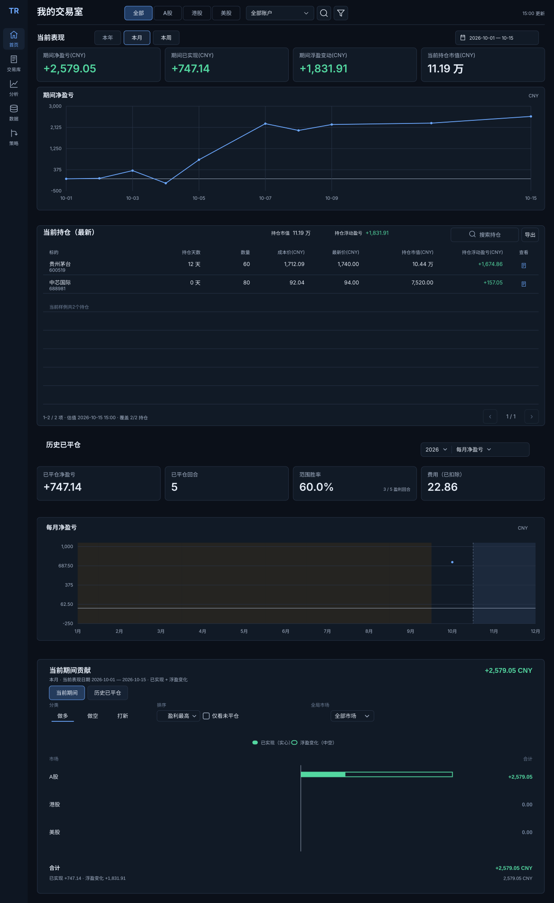


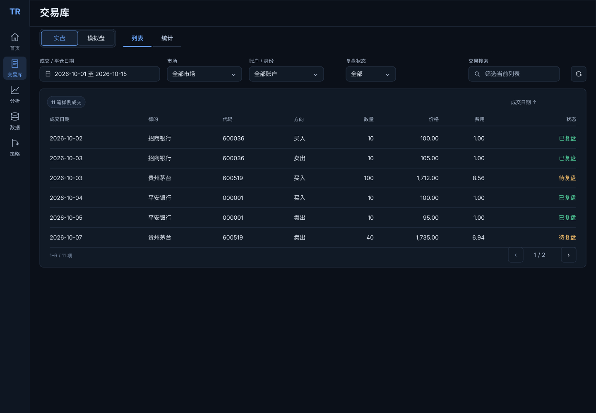

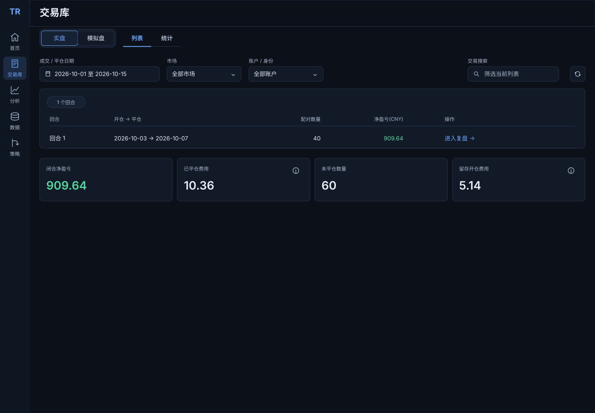

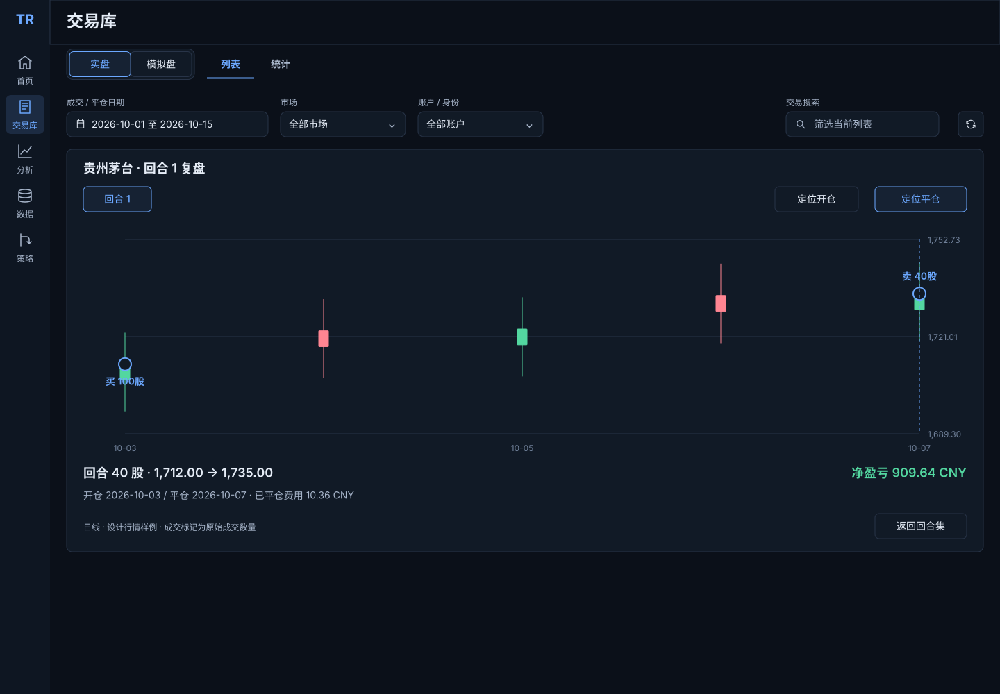

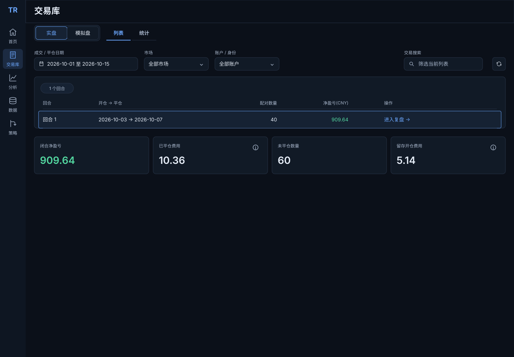

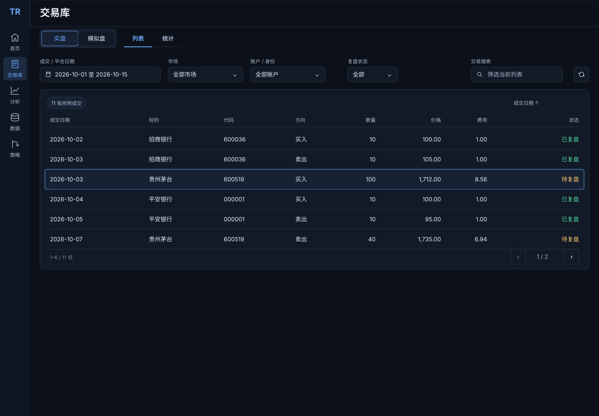


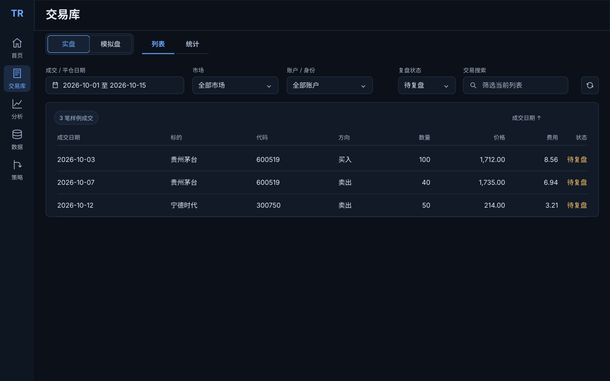


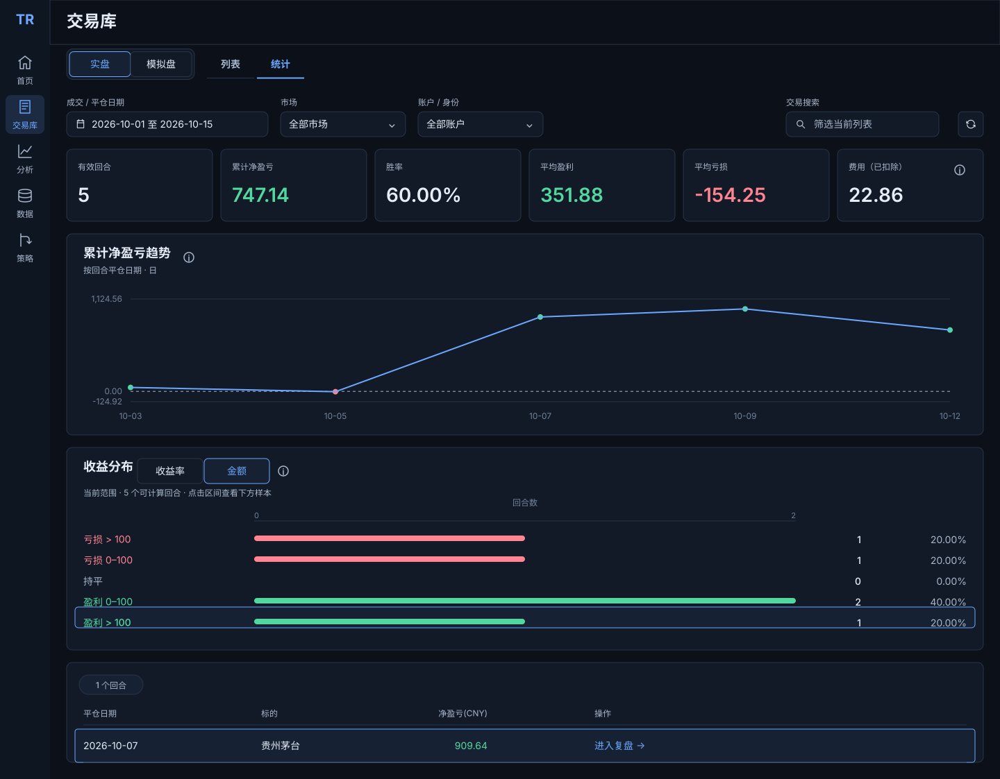
第 1 / 14 帧
本组分镜的共享来源快照为：首页本月 2026-10-01—2026-10-15、全部市场/账户、贡献模式“当前期间 / 做多 / 盈利最高”、滚动起点 0；实盘列表保留该范围，成交日期升序、空搜索、第 1 页、每页 6 笔。选择贵州茅台后沿实盘标的回合集进入回合复盘，返回逐层恢复回合/成交行焦点；首页返回通过全局侧栏恢复原交易库入口焦点，不新增顶部返回首页按钮。模拟盘练习日期范围独立为 2026-10-15—2026-10-19，练习日期升序、空搜索、第 1 页、每页 6 次练习；选择练习后沿练习详情进入内部配对和配对回放。两个模式的条件分别存储。
待复盘是显式的成交复盘状态，与是否留仓无关。样例待复盘为茅台买100股、卖40股和宁德时代已平仓卖50股；中芯国际尚有80股持仓但已复盘，因此不在待复盘结果中。
首页估值和复盘 K 线属于入口旅程的设计行情样例，不能替代 V2.0 模拟练习的结束估值来源。图中标记原始成交数量，内部来源数量另列，不把配对部分当作原始成交；当前 V2.0 练习净额只使用第五章定义的样例字段和一次费用扣减。
入口帧和到达帧的职责分开：入口帧的导航按钮负责进入普通交易库；到达帧显示已生效条件和交易列表，不再要求重复点击“进入交易库”。待复盘分镜只表达交易库内的显式筛选，不代表首页入口或默认队列。首页只展示普通入口帧，V2.0 交易库展示完整到达、实盘列表/标的回合集/回合复盘、模拟盘练习列表/练习详情/内部配对/配对回放和返回链路。
七、异常状态
异常状态按情况、呈现和保留与恢复区分；没有交易、搜索无匹配、实盘没有已平仓回合、模拟盘没有可展示内部配对、数据缺失和计算输入缺失分别表达，不能将它们合并为零。
| 情况 | 呈现 | 保留与恢复 |
|---|---|---|
| 首次加载 | 标题、工具区、表头和行槽使用最终尺寸占位。 | 保留工具区、表头和结果区尺寸与位置。 |
| 已有数据后台更新 | 显示上一组完整有效数据，并说明正在更新。 | 保留旧范围和有效值。 |
| 更新失败或超时 | 说明新范围未应用，并提供按原筛选条件重试。 | 保留旧范围和上一组有效值。 |
| 没有交易 | 显示“没有交易”的独立空态。 | 保留当前范围和工具区。 |
| 搜索无匹配 | 显示“当前搜索无匹配”的独立空态。 | 保留搜索词、范围和工具区尺寸与位置。 |
| 没有已平仓回合或内部配对 | 实盘显示没有已平仓回合，模拟盘显示没有可展示内部配对；不生成虚构对象。 | 保留日期、模式和统计结构。 |
| 数据缺失 | 显示“—”或“不可计算”，不伪造零值。 | 保留可用字段和原范围。 |
| 计算输入缺失 | 指出缺失字段，显示“不可计算”或破折号，不纳入完整分布。 | 保留其他可计算样本。 |
| 导入日期缺失或无效 | 停留在导入校验并要求补正。 | 导入完成前不进入正式练习列表；正式列表不显示未知练习日期。 |
| 读取失败 | 显示可恢复错误和重试动作。 | 保留原筛选条件。 |
| 连续切换范围 | 只应用最后一次仍有效的选择；迟到旧请求不得覆盖新选择。 | 保留最后一次仍有效选择的范围和结果。 |
| 非法市场参数 | 显示参数提示，市场回到 all。 |
保留可用的其他条件。 |
| 非法或不完整范围参数 | 显示可修正提示，不能静默扩为全部。 | 具体回退规则待规格明确。 |
| 账户等缺少已确认默认值的参数 | 显示参数错误，不伪造默认值。 | 具体回退规则待规格明确。 |
截图状态对照 · 文档演示
按步骤读懂状态变化
截图状态对照 · 文档演示；按钮仅切换截图，不操作产品

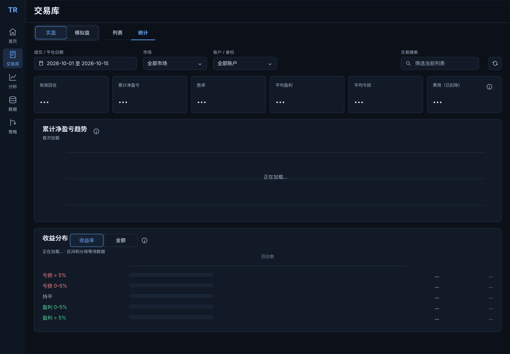

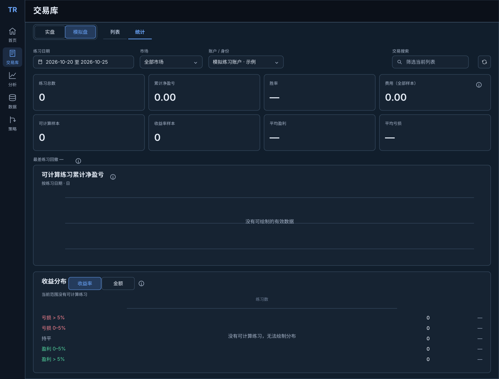

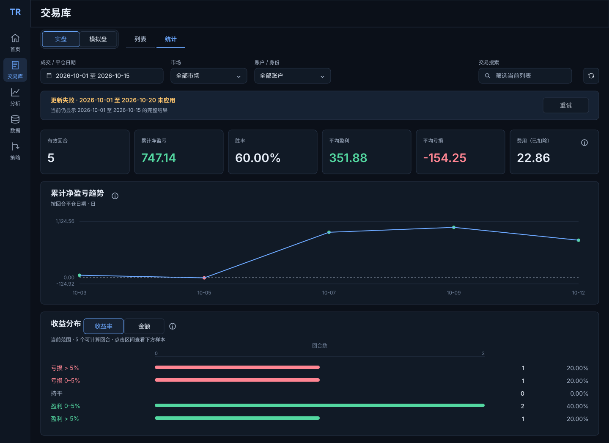

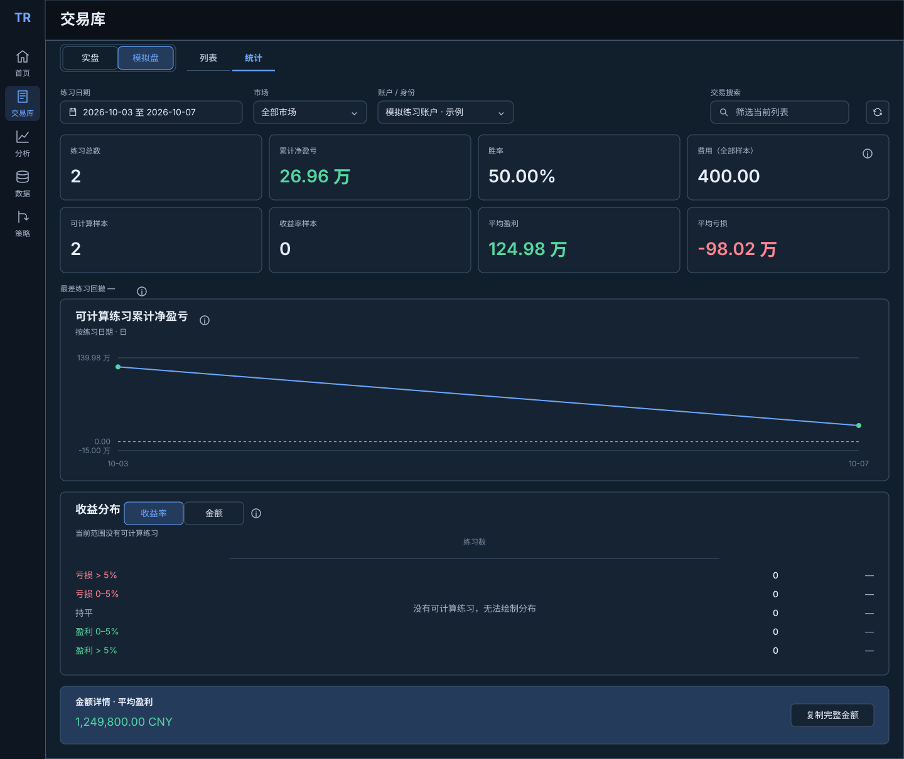

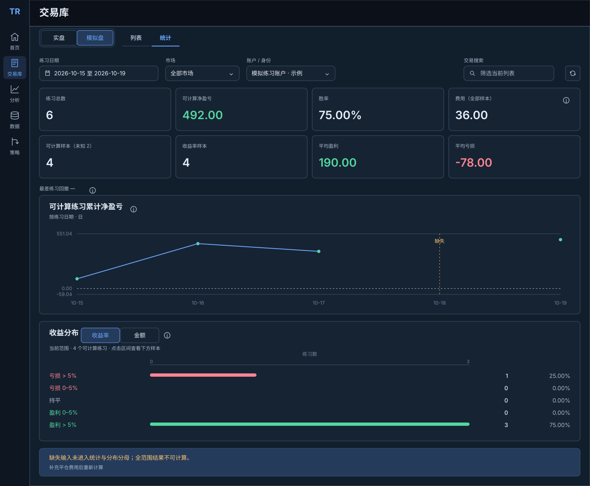
第 1 / 5 帧
八、组件复用与职责
交易库按公共、组合、业务和容器四层使用组件。公共层沿用 V2.5 的外观、状态、命中区、动效和基础视觉；组合层组织交易库页面；业务层承载第三至七章的条件、练习、回合、统计和异常规则；容器层承载实盘标的详情/回合集/回合复盘、模拟练习详情/内部配对/配对回放及返回上下文。第二章负责布局和尺寸，本章不重复定义。
| 层级 | 职责与边界 |
|---|---|
| 公共组件 | 保证交易库与全站控件状态、命中区和视觉基础一致，不另行设计公共外观、尺寸或状态顺序。 |
| 组合组件 | 把条件工具区、实盘/模拟盘模式、列表、统计、局部表内筛选、实盘标的回合集入口、模拟练习详情入口和分布下钻组合为页面阶段。 |
| 业务组件 | 表达来源条件立即生效、配对、日期口径、收益分类、显式待复盘筛选和逐层恢复等规则；一个模拟账户可包含多次练习，账户下拉筛选所属练习，不改变练习计数或内部配对；具体来源/跨账户边界仍待确认。 |
| 容器组件 | 复用既有交易详情容器；实盘继续使用标的回合集和回合复盘，模拟盘使用练习详情、内部配对和配对回放，恢复日期、筛选、标的/练习入口、焦点和滚动位置；不新增双栏容器。 |
公共技术名称按类别列出，具体使用位置见第二至七章。
全站信息 i 入口负责说明为何未知、谁是分母、费用是否已计入，以及当前行是练习、内部配对、实盘成交或回合；tooltip 不把待确认业务边界写成确定生产规则。实盘详情/回合复盘和模拟练习详情/配对回放继续使用既有容器，不为 V2.0 增加双栏。
| 类别 | 公共组件名称 |
|---|---|
| 基础操作 | IconButton、SegmentedTabs |
| 选择与浮层 | Select、Popover、FilterPopover |
| 状态与标记 | Token、StatusBadge |
| 数据展示 | DataTable、Metric、ChartTooltip |
| 空态与恢复 | EmptyState、RetryAction |
九、产品验收要求
静态分镜说明设计预期，不证明产品实现已经完成。功能、状态与持久化、视觉验收分别记录可观察结果，任何一项未验证都不能写成通过。
功能验收
- 从首页日期点和普通交易库入口进入，确认来源条件立即生效；在库内显式选择待复盘，确认结果只在库内出现。
- 分别进入实盘标的与回合复盘、模拟盘练习与配对回放、统计区间，确认列表、练习、回合、日期口径、配对、分布下钻和逐层返回符合本方案。
- 验证搜索只过滤交易库表，清空、无匹配、刷新、失败、重试和非法参数提示都保留正确的工具区与范围语义；仅模拟盘的月份、年份和空趋势使用确认练习日期，实盘统计使用回合平仓日期。
- 用同一账户、标的、练习日期和全部内容重复导入，确认格式、列序、行序变化不新增样本；用实际变化导入，确认选择更新或新建前不修改原练习。
- 用 100+50 买入、一次卖出 80 和两条技术成交拆分分别验证“一个主动回合”和“内部配对/成交行”的差异，不用技术拆分数冒充人的平仓次数。
状态与持久化验收
- 在隔离数据库中完成一次实盘回合复盘和一次模拟配对回放，返回、刷新并重新打开，确认日期、模式、账户、列表或练习、回合/内部配对、区间、排序、页码、滚动位置和焦点仍一致。
- 检查后台更新、连续请求、迟到结果、空态、缺失和重试；旧有效结果不能被失败请求覆盖，缺失值不能变成零。
- 检查更新现有练习时历史、笔记、截图、标注和未受影响的完成状态保留，受影响内容才回到待核对；历史版本不增加练习样本。
- 写入验收不得改变原始交易数据，并记录隔离数据库、请求范围和恢复字段的实际结果。
视觉验收
- 使用批准视口和相同导航、数据状态对照真实页面，按第二章检查布局层级、工具区职责、表格列对齐和返回焦点。
- 检查价格两位小数、金额“万/亿”阈值与完整值可查、占比两位小数、窄栏换行，以及没有交易、无匹配、无已平仓回合、错误、极端和缺失状态的独立呈现。
- 真实图表中推进回放时显示目标 K 线或成交，未来信息不可见，视口切换不改变阶段边界；控件存在、DOM 存在或 HTTP 成功不能替代视觉证据。
- 功能、数据持久化、真实页面行为和同状态视觉比较分别记录结果；静态图不能证明产品验收完成。
十、来源映射与业务边界
本章集中记录 V2.0 的来源迁移、历史参考和仍需业务确认的边界；历史版本与候选方案只用于追溯，当前规则以《交易库设计规范》和本正文为准。E JPG 与 navigation-e-prototype.html 只承担已批准的几何、密度、层级和颜色参考。
| 来源主题 | 本版章节 | 保留内容 |
|---|---|---|
| 首页日期入口、普通交易库入口与返回 | 第一、三、六章 | 条件立即生效、默认实盘、URL 重建、全局侧栏回首页、返回字段。 |
| E 布局与公共控件 | 第二、八章 | 64px 顶栏、72px 侧栏、58px 次栏、列表/统计相邻、信息 i、命中区和数字格式。 |
| 日期、模式与搜索 | 第三章 | 上海自然周/月/年、练习/历史/导入三种日期分离、局部表内搜索、刷新、分别记忆模式。 |
| 练习、重复与回合 | 第一、四章 | 完整文件为练习、同日稳定编号、等价重复、更新保护、主动平仓回合和内部配对分层。 |
| 统计、趋势与异常 | 第五、七章 | 实盘回合与模拟练习分母、费用一次、残余未知、最差练习回撤、按模式区分的日/月/年粒度、失败范围和迟到请求。 |
| 旅程与产品验收 | 第六、九章 | 详情、回放、返回上下文、消失对象焦点和真实产品验收要求。 |
已确认决定
- E 继续作为当前视觉表面：顶栏不放独立返回首页，不出现视角标签；首页通过全局侧栏恢复来源。
- 首页只保留普通交易库入口；待复盘是交易库内的显式筛选，不是首页默认目的地。
- 模拟统计按完整练习汇总；实盘一次主动平仓动作是一条回合；内部配对、成交行和未平仓状态分别展示。
- 练习日期必须在导入完成前有效；优先从无歧义文件名识别，补填或更正时记录来源，重导不覆盖人工确认且不新增练习；同标的同日独立练习使用稳定本地 #01/#02，序号不随排序改变；等价重复不新增，内容变化先选择更新或新建并保护人工成果，无法匹配的人工成果不得静默删除或强制转移。
- 模拟净额使用未扣费已实现毛盈亏加未扣费残余浮动毛盈亏，再减费用一次；已有含费净额不二次扣费；缺少残余结束估值保持未知；最差练习回撤按单练习权益轨迹取最大单练习回撤。
- 练习收益率使用该次练习的正初始资本；没有可计算胜率样本显示“—”；实盘与模拟分别使用回合平仓日和确认练习日期，月份、年份、空样本和缺口不混用日期口径。
仍待业务确认的边界
- 多标的或多账户练习如何命名、分组与展示，以及同名标的的最终呈现。
- 初始资本、结束估值、估值时间和历史报价的生产权威来源。
- 如何从真实成交流识别人的主动平仓动作，以及混合方向、加仓减仓和跨日持仓的生产分类。
- 内部预览的最终列名、预览指标和冲突详情的完整交互；样例 humanactionid 只表达设计输入，不代表自动识别已经实现。
- 部分导入、历史区间缺失、账户边界和错误恢复在产品中的具体交互细节。
构建命令、资产清单、数字校验和本包状态记录在同目录 README 与任务 implementation-report 中；正文只保留设计合同和未来产品验收要求。